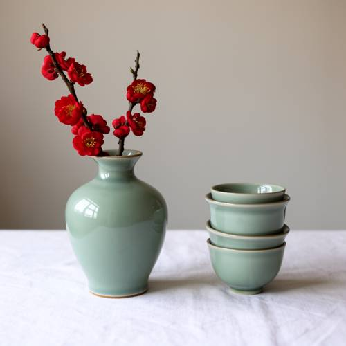
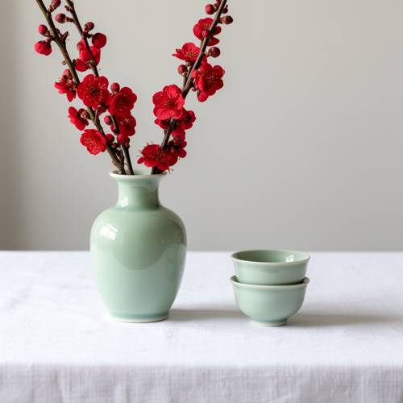

Entity Layout — On a white tablecloth, on the left side of the picture is a celadon va
On a white tablecloth, on the left side of the picture is a celadon vase with a red plum branch, and on the right are two stacked tea cups.

Direct — one call, no iteration

Continuum — Kimi K3 + FLUX.2-dev
Judge — Direct
FAILEntity Layout - Two-Dimensional Space — The image shows a celadon vase containing red plum branches positioned on the left side of the frame. To the right of the vase, there is a stack of three tea cups. The prompt specifies 'two stacked tea cups' on the right, but the image depicts three. Therefore, the layout of the specifically described entities is not entirely accurate.
Judge — Continuum
PASSEntity Layout - Two-Dimensional Space — The image shows a celadon vase with red plum branches positioned on the left side of the frame. To the right of the vase, located on the right side of the picture, are two stacked tea cups. This spatial arrangement accurately reflects the layout described in the prompt.
What the agent did
Thinking
Generate a still life: white tablecloth, left side celadon vase with red plum branch, right side two stacked tea cups.
Step 1 — `generate_image`
{
"prompt": "Still life photograph on a white tablecloth. On the left side of the picture stands a pale green celadon porcelain vase holding a flowering branch of red plum blossoms. On the right side are two small tea cups stacked one on top of the other. Soft natural light, clean minimal composition, high detail.",
"model": "flux2-dev"
}
Result img_0
Thinking
The image matches: white tablecloth, celadon vase with red plum branches on the left, two stacked tea cups on the right. Good. Mark best.
Step 2 — `mark_best`
{
"image": "img_0",
"reason": "All requested elements present and correct: white tablecloth, celadon vase with red plum branches on the left, two stacked tea cups on the right. Clean composition, no fixes needed."
}
Model
The image is complete and matches your description on the first pass: - **Left side**: a pale green celadon vase holding branches of red plum blossoms - **Right side**: two small celadon tea cups neatly stacked - **Surface**: a white tablecloth, with soft natural lighting for a clean, minimal still life No edits were needed — this is the final result.